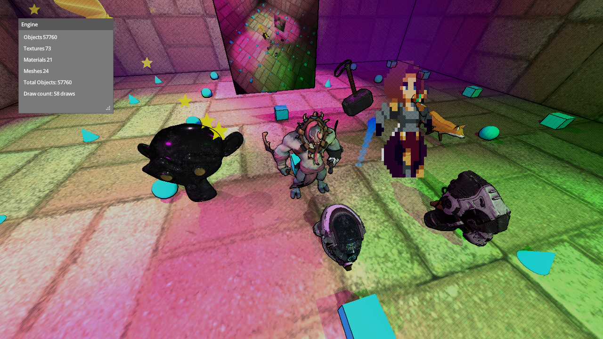

Physically-based rendering
Metallic-roughness materials with image-based lighting, driven entirely from bindless GPU buffers.
See PBR examplePhysically-based rendering
Mjolnir is a minimalistic, bindless, GPU-driven game engine in Odin + Vulkan 1.3.

Run make shader to compile shaders to SPIR-V and copy the mjolnir/
directory into your project. See examples and the
API reference.
Metallic-roughness materials with image-based lighting, driven entirely from bindless GPU buffers.
See PBR examplePoint, spot and directional lights with 2D and cubemap shadow maps.
See lights exampleAny camera output can be sampled as a texture: mirrors, minimaps, portals.
See RTT exampleForward kinematics, FABRIK inverse kinematics, and layering with bone masks, blend modes and transitions.
See animation exampleTail follow-through, spider legs and path-on-spline modifiers on top of any rig.
See spider examplePhysics primitives - boxes, spheres and cylinders with sleeping, sensors, area queries and ray casts.
See physics exampleRecast, Detour path queries and crowd steering with local avoidance.
See navigation exampleGPU particle simulation, shaped by force fields placed in the scene.
See particles exampleTonemap, bloom, blur, fog, outline, depth of field and crosshatch, stacked per camera.
See post processing exampleglTF scenes with skins and animations, and OBJ meshes. Procedural cubes, spheres and tori built in.
See GLTF example